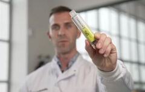

Dragons' Den investors helped women get rid of pain and depression. How did they succeed?
В одном из выпусков на суд инвесторов пришла девушка, которая пыталась убедить бизнесменов вложиться в средство от ПМС. В своей презентации она рассказала не только о том, что боли, депрессивное настроение и повышенный аппетит приходят к 99 из 100 женщин во время предменструального синдрома, но и о том, что учёные годами пытались создать работающий препарат от ПМС. И ей, молодому специалисту, удалось разработать средство, которое помогает. Несколько инвесторов решили вложиться в проект, и совсем скоро выйдет выпуск Dragons’ Den What Happened Next с участием молодого учёного. Ну а сейчас мы хотим рассказать вам, что это за средство, как оно работает и почему его производством заинтересовалась сразу несколько мультимиллионеров.
Стейси Джеймс — молодой специалист, которая не понаслышке знает о симптомах ПМС. Во время учёбы в медицинском университете она не раз принимала участие в научных конференциях. После одной из конференций она стала активно изучать натуральные ингредиенты, которые не нарушают гормональный фон, но снимают симптомы предменструального синдрома. И ей удалось выяснить необычный факт, и прямо сейчас она расскажет вам какой.
— Здравствуйте, спасибо, что пришли к нам на интервью. Расскажите, почему именно средство от ПМС?
— Здравствуйте, спасибо вам за приглашение. Я как гинеколог и в первую очередь девушка знаю, что ПМС беспокоит каждую женщину. У кого-то этот синдром протекает менее выраженно, но так или иначе он приносит дискомфорт. Лично мне повезло меньше и предменструальный синдром у меня проходит очень ярко. Боль в животе, спине, груди и голове, у меня болит буквально всё тело. Плюс появляются проблемы с пищеварением, моё лицо покрывают прыщи и я становлюсь очень раздражительной. Такие симптомы преследуют большинство женщин, а избавиться от них при помощи медикаментов, диеты или спорта — невозможно. А нам также приходится ходить на учёбу, работать, быть мамами и жёнами. Большинство женщин в этой ситуации не могут позволить себе несколько дней отдохнуть, что может привести к нервному срыву, депрессии и развитию гинекологических заболеваний.
— Это ужасно, но почему организм себя так ведёт в это время?
— Перед началом цикла перестраиваются гормоны, и это так отражается на организме. Чем сильнее ПМС, тем и сложнее переносится сам цикл. Он становится болезненным, нестабильным, слишком коротким или наоборот продолжительным.
Многие думают, что такой ПМС появляется из-за гинекологических проблем, например, полипов, эндометриоза или недостатка витаминов, железа. Но это не всегда так. В 95% случаев проблемы развиваются именно из-за сильного ПМС.
— Получается, что вы не понаслышке знаете, что такое ПМС и поэтому решили помочь себе и другим женщинам. И как же вам это удалось?
— Я пошла на медицинский из-за этого, так как всю жизнь мучилась от предменструального синдрома. Я перепробовала все средства, но ни одно не было эффективным. Во время учёбы я посещала медицинские конференции и форумы. И на одном из них мне удалось записаться на практику к авторитетному врачу, который занимается научной деятельностью. Он-то мне и рассказал про пользу CBD, который способен облегчать боль и спазмы, повышать концентрацию внимания, уменьшать воспаление, расслаблять мышцы и оказывать успокаивающее действие. Его активно используют в медицине, даже есть похожие средства от ПМС, но все они недостаточны эффективны и безопасны. Поэтому я решила сделать своё. Конечно, я потратила очень много средств и времени, прежде чем создать первостепенную формулу Illumis. И она уже отличалась от других средств, но была ещё не идеальной.
— Поэтому вы пришли на Dragons’ Den?
— Да. И мне удалось завоевать расположение инвесторов, и в конце концов я получила приличную сумму на исследования и развитие. Я очень благодарна, что меня выбрали. Эти деньги помогли продолжить исследования, нанять специалистов, доработать формулу, провести испытания и запустить производство.
— Расскажите подробнее о формуле препарата. Как она действует и можно ли от неё получить такой эффект, как, например, от THC?
— Перед тем, как рассказывать о главных ингредиентах, я сначала оговорюсь, что это натуральный и безопасный продукт, который в корне отличается от THC и не даёт такого же эффекта.
Два главных ингредиента — это CBD и CBG.
CBD — каннабидиол, который он не обладает опьяняющим соединением и синтезируется из Cannabis Sativa. Он известен в медицине своими мощными целебными и терапевтическими свойствами. CBD действует на мышцы, расслабляя их и снимая спазмы, уменьшает боль, снимает воспаление. При этом он повышает концентрацию внимания. Вы не чувствуете себя очень расслабленными, а наоборот, собранными и при этом спокойными. То есть это растение не повышает пульс, не нарушает сердечный ритм и не даёт нервной системе возбуждаться.
Каннабигерол, или CBG, также содержится в растении Cannabis Sativa. Он открыт позднее, чем CBD. Это cвязано с тем, что его содержание в растении не так велико, и его гораздо сложнее и дороже извлечь. Признаюсь, большая часть инвестиций ушла именно на CBG. Это и отличает Illumis от похожих средств. В моём препарате содержится чистый CBG в большом количестве. Именно этот ингредиент обладает особыми целебными свойствами. Это не только антибактериальное и противогрибковое средство, но и отличное болеутоляющее, противовоспалительное, а главное — потенциальный ингибитор рака. У него много свойств, которыми не может похвастаться ни одно средство в мире. При этом CBG также не оказывает опьяняющего действия на тело или мозг. Кроме того, CBG способствует укреплению костей и снятию бессонницы, что очень важно для женщин старше 30 лет, когда появляются первые проблемы, которые очень быстро могут привести к серьёзным последствиям.
— Получается, ваша формула полностью безопасна? Но что ещё в неё входит?
— Да, Illumis полностью безопасен. Это подтвердили тестирования, которые проводились в независимых лабораториях, где продукт получил сертификаты анализа (COA). Также в лабораториях были подтверждены целебные свойства препарата. Формула не была бы такой эффективной без дополнительных натуральных ингредиентов: например, витекса, который много столетий помогает при проблемах бесплодия и уменьшает симптомы, которые могут возникнуть до или во время менструального цикла женщины, такие как головные боли и нерегулярные кровотечения.
По разным причинам у женщин меняется соотношение нейромедиаторов, что влияет на психоэмоциональное состояние, настроение, репродуктивную систему и сексуальное поведение. Доказано: у девяти женщин из десяти проблемы со здоровьем обусловлены именно этой причиной. Современные лекарства направлены на решение одной конкретной проблемы, при этом не устраняют настоящий источник заболевания. Illumis предназначен для комплексного оздоровления женского организма, его регулярный приём стабилизирует эмоциональное состояние, устраняет проблемы в интимной и репродуктивной сферах.
— Это удивительно. Вы проделали огромную работу, чтобы создать это средство. Но я до конца не понимаю, как оно работает.
— У всех людей есть эндоканнабиоидная система (ECS). Эта система состоит из каннабиноидных рецепторов (CB₁ и CB₂), которые взаимодействуют с каннабиноидами, такими как CBD и CBG. Вы удивитесь, но оба эти рецептора (CB₁ и CB₂) экспрессируются в матке, других жизненно важных органах, нервной системе и костях. Вот почему CBD и CBG помогают при многих проблемах, связанных с судорогами, гормональным дисбалансом, настроением, беспокойством, воспалением. При этом они делают друг друга сильнее, потому что CBD более эффективен для физического состояния тела, а CBG помогает при стрессе, психоэмоциональном напряжении, депрессии и неврологической дисгармонии. Дополнительные натуральные ингредиенты также нормализуют баланс женских гормонов в организме, регулируют цикл, снимают болевые ощущения, облегчают течение цикла.
Также Illumis:
- блокирует медиаторы воспаления;
- повышает активность мозгового медиатора GABA, тормозящего боль;
- стимулирует выработку серотонина — «гормона радости»;
- уменьшает силу болевых импульсов;
- нейтрализует сигналы боли, поступающие в мозг;
- снижает пульсацию гладкой мускулатуры при спазмах;
- снимает тошноту и рвоту, которыми нередко сопровождается сильная боль;
- смягчает течение хронических болей на фоне артрита, радикулита, гастрита, мигрени и других заболеваний;
- предотвращает обострения хронических заболеваний и их осложнения (в том числе и образование опухолей).
— Неудивительно, что ваша презентация покорила сердца инвесторов, и вам помогли создать это средство. Но где его можно приобрести?
— На данный момент Illumis, к большому сожалению, — эксклюзивная продукция, поэтому ещё не продаётся в аптеках. При этом первая партия разошлась за пару дней. Сейчас готова вторая партия, и её можно приобрести на сайте товара, который мы сделали специально для удобства заказа. Вам не нужен рецепт от врача, так как средство не имеет запрещённых веществ и полностью натуральное.
— Это, несомненно, радует. Спасибо большое за интервью, вашу работу и за то, что пытаетесь изменить мир к лучшему!
— Я всегда была за инновации и рада, что у меня получается двигаться в правильном направлении. Надеюсь, Illumis поможет каждой женщине и поэтому дарю скидку 50 % всем, кто успеет заказать продукт из второй партии.
Related Topics
Top Stories
- Medicinal cannabis helps cancer pain 4 days ago • 1089 comments
-  Vaping: high lead and nickel found in illegal vapes 2 days ago • 394 comments
- Magic CBG 6 days ago • 553 commentsents
- The Dutch solution to stress 5 hours ago • 77 comments
- Medical effects of cannabis components yesterday • 261 comments
Comments
Join the conversation
Mary Thompson
10:20
Thanks, I’m gonna order it for myself.
Megan Wild
10:22
I personally don't have any issues of this kind. Dunno, when they talk about pain and a bad mood, it seems to me that they are exaggerating.
Margo Kovalev
10:29
You know, everyone's body is different. My pain was so terrible that I could hardly get out of bed for three days, and 10 days before my periods I simply turned into a ball of nerves, I was irritated by EVERYTHING. Fortunately, I found out about Illumis, otherwise I don’t know how much longer I would have suffered. This is the only product that whipped me into shape, both internally and externally.
Roxy Hunt
11:02
I also suffered from PMS symptoms, I was twitchy and angry. None of the sedatives helped, nor did the painkillers. As soon as I tried Illumis, I went from being an evil witch to being a fairy.
Helen Jones
11:27
I’ve been experiencing torture every month since the age of 12... and my periods last 7 days. And 10 days BEFORE I feel I’m not myself anymore… I checked with gynecologists, there are no deviations, they say… my body just works like that! It’s just terrible. I'm going to try this, hope it helps…
Heather Beri
09:59
I can relate! Periods are the worst thing that ever happened in my life! But with Illumis, I forgot about this nightmare! And most importantly, I am delighted with the composition! A very effective remedy, all-natural and does not harm the internal organs and the nervous system.
со скидкой 50%